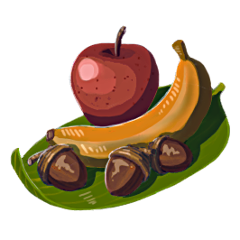
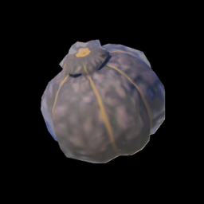
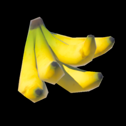
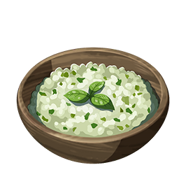
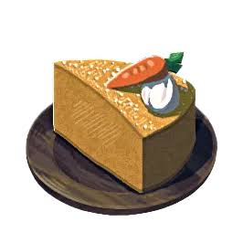

在《塞尔达传说：王国之泪》里，海拉鲁大陆的烹饪系统极其自由，你可以把各种奇奇怪怪的东西丢进锅里。但讲真，通关或者开荒过程中，你真正需要频繁放进快捷栏的料理也就那么几种。通关大佬和速通玩家们基本都在用以下几款高性价比的"神级料理"。
下面直接给你干货，省去那些花里胡哨的菜谱，只看最实用、性价比最高的几种搭配，以及它们的素材该去哪里顺手薅一波。
核心必备：
⚠️ 四大神级料理配方——在《王国之泪》里，烹饪有一个隐藏的大原则：带特殊词条的食材（比如"大剑"、"生命"）绝对不要混搭，否则效果会互相抵消，变成一盘毫无卵用的普通回血菜。
四大神级料理详解
🍎 瞬间满血神器：蒸水果
大生命萝卜 ×1 或者 生命松露 ×1

大生命萝卜

生命松露
效果：无论你残血到什么程度，吃一个直接全血补满，并额外赠送若干黄金额外心心（黄心）。
💡 老司机心得
千万别把 5 个生命萝卜一起煮！在本作中，只要带"生命"前缀的食材，哪怕只放一个，也能触发"完全恢复"的隐藏保底。单炒一个萝卜的性价比，比攒一锅高出太多。
🍌 人人必备的伤害药：大剑蒸水果（3级加攻）
大剑香蕉 ×5

大剑香蕉
效果：攻击力提升 3 级（最高级），持续 4分10秒。
💡 老司机心得
打人马、打幻影加侬或者各种BOSS前的标准起手式。如果你手头有"大剑草"，也可以用 4 个香蕉 + 1 个大剑草替换，效果一样是3级加攻。
🌿 地底救命稻草：野菜牛奶粥（恢复瘴气）
向阳草 + 鲜奶 + 海拉鲁米

野菜牛奶粥
效果：恢复 3 到 4 个被瘴气封锁的"破碎心心"，并顺便回血。
💡 老司机心得
地底开荒必带。纯用 5 个向阳草煮只能恢复瘴气不回血，稍微丢一块垃圾肉或者海拉鲁米进去，就能兼顾回血，非常划算。
🥕 跑图飞檐走壁：胡萝卜蛋糕（额外精力）
速速胡萝卜✖1，毅力胡萝卜✖1，塔邦挞小麦✖1，蔗糖✖1，山羊奶油✖1

胡萝卜蛋糕
效果：瞬间补满你所有的精力槽（绿圈），并额外赠送一小段黄金圈（额外精力）。
💡 老司机心得
爬大峭壁或者空中长途滑翔时，精力和体力快见底了？别慌，磕一个这个，直接原地复活还能飞得更远。
核心食材去哪捞？
知道了配方，去哪儿高效进货才是关键。海拉鲁大陆有几个著名的"大自然批发市场"，传送过去拔腿就捞，几分钟就能装满背包。
| 食材名称 | 核心效果 | 最优采集地点与路线 |
|---|---|---|
| 大剑香蕉 | 3级攻击 | 费罗尼地区（地图右下角热带雨林）。尤其是湖畔驿站周边、乌尔利山附近的树林里遍地都是，顺便端了依盖队基地也能搜刮一堆。 |
| 向阳草 | 瘴气恢复 | 所有天空群岛（空岛）。比如初始空岛、或者有各种弹跳机关的空岛，只要在地上看到金黄色像向日葵一样的植物，拔就完了。地底极少。 |
| 大生命萝卜 | 完全复活 | 北哈特尔天空群岛、或者其他高级空岛的残垣断壁旁。这东西比较稀有，看到了一定要用图鉴拍照功能开启"寻找探测器"。 |
| 金苹果 | 料理暴击 | 萨托利山（监视堡垒西南方）的苹果园。山上有一片巨大的苹果林，里面混生着好几颗金苹果，拿来当引子可以让料理效果大成功。 |
🏆 老司机终极心得
快捷栏建议常备：蒸水果×5 + 大剑蒸水果×10 + 野菜牛奶粥×5 + 胡萝卜蛋糕×5。这套组合可以应对90%的战斗和探索场景，从此告别手忙脚乱翻背包的窘境！